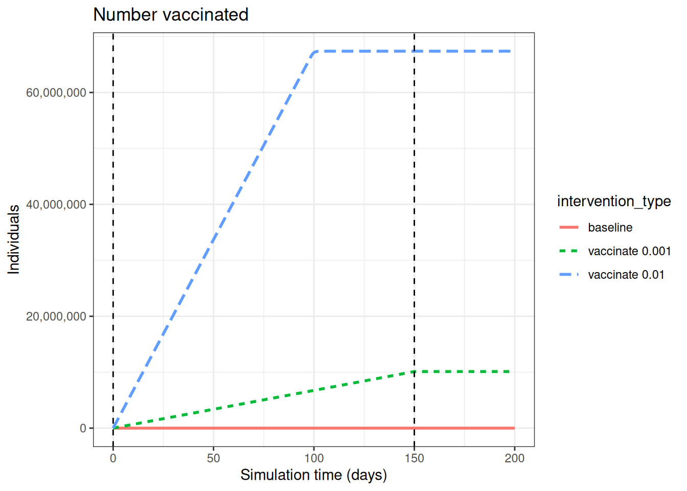
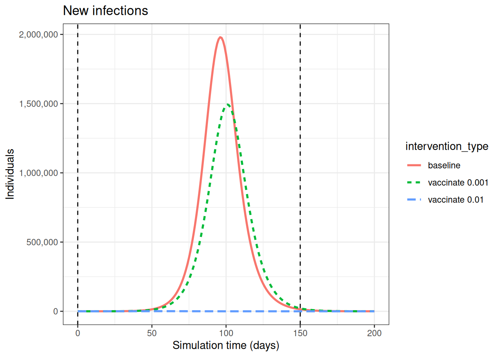
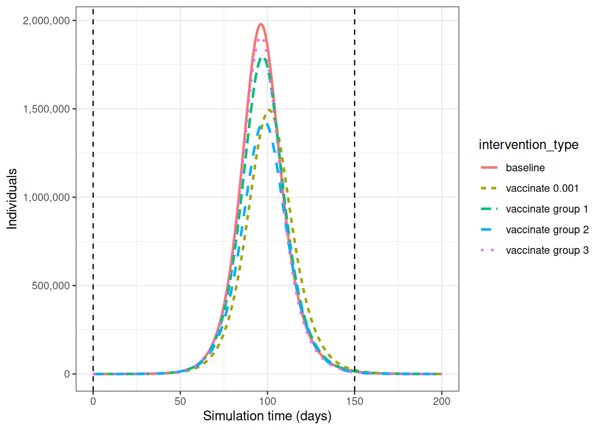
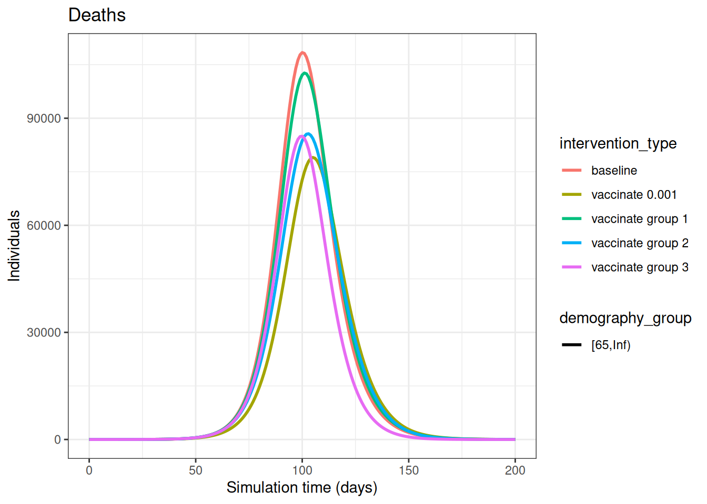
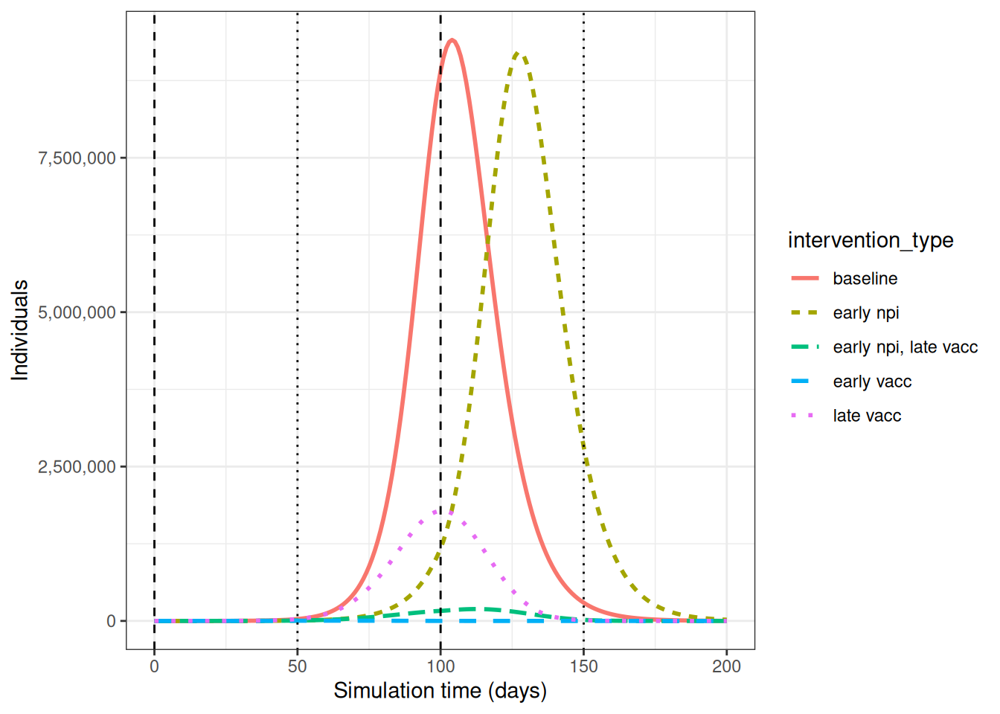
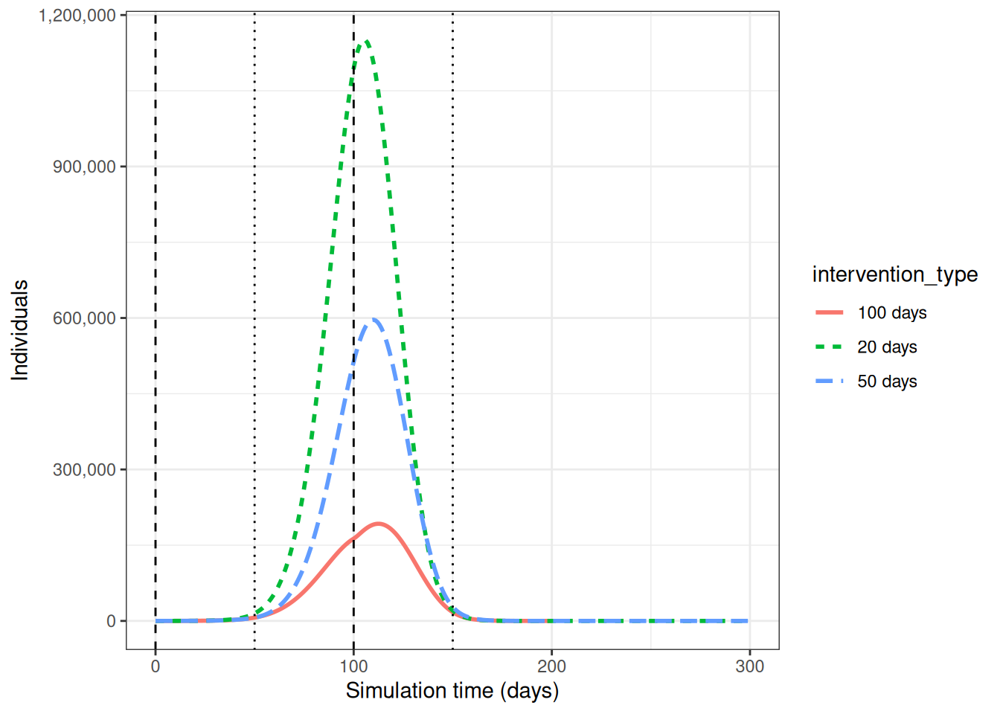

library(ggplot2)
library(epidemics)
library(contactsurveys)
library(socialmixr)
library(wpp2024)
library(dplyr)
library(purrr)Comparar estratégias de vacinação
NotaPerguntas
- Quais são os efeitos diretos e indiretos da vacinação?
- Quais são os benefícios de programas de vacinação direcionada?
- O que acontece se combinarmos vacinação e NPIs?
DicaObjetivos
- Compreender o impacto potencial de programas de vacinação
- Implementar programas de vacinação e medidas de NPIs simultaneamente usando
{epidemics}
ImportantePré-requisitos
- Concluir os tutoriais Simular a transmissão, Modelar intervenções e Comparar desfechos de saúde pública das intervenções.
Você deve se familiarizar com os seguintes conceitos antes de trabalhar neste tutorial:
Resposta a surtos: Tipos de intervenção.
Introdução
Programas de vacinação podem ser usados para ajudar a controlar epidemias por meio de proteção direta e indireta contra a infecção. Podemos usar modelos matemáticos para fazer previsões sobre o impacto potencial de diferentes estratégias de vacinação.
Dependendo de como as infecções se propagam, direcionar grupos de risco específicos para a vacinação pode ser uma estratégia mais eficaz do que vacinar todas as pessoas. Quando programas de vacinação não estão imediatamente disponíveis para implementação, seja sob a perspectiva de capacidade ou de desenvolvimento, também podemos querer saber como as intervenções não farmacológicas (NPIs) podem ser usadas para controlar a epidemia nesse intervalo, assim como após o início do programa de vacinação.
NotaNo Brasil: priorização de grupos
O Brasil operou a vacinação contra a COVID-19 por grupos prioritários definidos no Plano Nacional de Operacionalização, e não por idade em ordem decrescente simples. Se o seu cenário é brasileiro, a ordem de vacinação precisa reproduzir as prioridades que foram adotadas — é justamente esse desenho que o episódio discute.
Neste tutorial, compararemos diferentes estratégias de vacinação usando modelos do {epidemics}. Usaremos os seguintes pacotes do R:
Termos principais
Antes de prosseguir, vamos definir alguns termos importantes:
- Imunidade de rebanho: Uma forma de proteção indireta contra doenças infecciosas que ocorre quando uma proporção suficiente da população se torna imune a uma infecção, reduzindo assim a probabilidade de infecção para indivíduos que não possuem imunidade.
- Estratégias de vacinação: Diferentes abordagens para a administração de vacinas, que podem incluir o direcionamento para faixas etárias ou populações de risco específicas.
- Intervenções não farmacológicas (NPIs): Ações, além de vacinas e tratamentos, que pessoas e comunidades podem adotar para ajudar a desacelerar a propagação de doenças.
Efeitos diretos e indiretos da vacinação
Programas de vacinação que utilizam vacinas bloqueadoras de infecção apresentam dois benefícios:
- Redução do risco individual de infecção (efeito direto da vacinação)
- Redução da contribuição subsequente para a transmissão (efeito indireto da vacinação).
Ilustraremos isso usando resultados de model_default() no {epidemics}. A função model_default() implementa um modelo SEIR (Suscetível-Exposto-Infectado-Recuperado) padrão com compartimentos de vacinação. Usando a matriz de contato e os parâmetros do exemplo do surto de COVID-19 em Modelar intervenções, investigaremos o impacto de dois programas de vacinação no número de infecções. Para este cenário hipotético, assumiremos que os programas de vacinação começam no dia 0 e permanecem em vigor por 150 dias. Assumiremos que todas as faixas etárias são vacinadas na mesma taxa em cada programa, como segue:
- programa de vacinação 01: taxa de vacinação 0.001
- programa de vacinação 02: taxa de vacinação 0.01.
# preparar objetos de vacinação
vaccinate_01 <- epidemics::vaccination(
name = "vaccinate all",
time_begin = matrix(0, nrow(contacts_byage_matrix)),
time_end = matrix(150, nrow(contacts_byage_matrix)),
nu = matrix(c(0.001, 0.001, 0.001))
)
vaccinate_02 <- epidemics::vaccination(
name = "vaccinate all",
time_begin = matrix(0, nrow(contacts_byage_matrix)),
time_end = matrix(150, nrow(contacts_byage_matrix)),
nu = matrix(c(0.01, 0.01, 0.01))
)Vemos o resultado intuitivo de que, quanto maior a taxa de vacinação, mais pessoas são vacinadas.

output_baseline <- epidemics::model_default(
# population
population = uk_population,
# rate
transmission_rate = transmission_rate,
infectiousness_rate = infectiousness_rate,
recovery_rate = recovery_rate,
# time
time_end = 200, increment = 1.0
)
output_vaccinate_01 <- epidemics::model_default(
# population
population = uk_population,
# rate
transmission_rate = transmission_rate,
infectiousness_rate = infectiousness_rate,
recovery_rate = recovery_rate,
# intervention
vaccination = vaccinate_01,
# time
time_end = 200, increment = 1.0
)
output_vaccinate_02 <- epidemics::model_default(
# population
population = uk_population,
# rate
transmission_rate = transmission_rate,
infectiousness_rate = infectiousness_rate,
recovery_rate = recovery_rate,
# intervention
vaccination = vaccinate_02,
# time
time_end = 200, increment = 1.0
)
# create intervention_type column for plotting
output_baseline$intervention_type <- "baseline"
output_vaccinate_01$intervention_type <- "vaccinate 0.001"
output_vaccinate_02$intervention_type <- "vaccinate 0.01"
output <- rbind(output_baseline, output_vaccinate_01, output_vaccinate_02)
output %>%
filter(compartment == "vaccinated") %>%
ggplot() +
ggtitle("Number vaccinated") +
aes(
x = time,
y = value,
color = intervention_type,
linetype = intervention_type
) +
stat_summary(
fun = "sum",
geom = "line",
linewidth = 1
) +
scale_y_continuous(
labels = scales::comma
) +
geom_vline(
xintercept = c(
vaccinate_01$time_begin,
vaccinate_01$time_end
),
linetype = 2
) +
theme_bw() +
labs(
x = "Simulation time (days)",
y = "Individuals"
)Para compreender o efeito indireto das vacinações, queremos saber o efeito que a vacinação exerce sobre a transmissão e, consequentemente, sobre a taxa na qual novas infecções ocorrem. Usaremos a função new_infections() no {epidemics} para calcular o número de novas infecções ao longo do tempo para os diferentes programas de vacinação.
Os dados de entrada necessários são:
data: a saída do modelo,exclude_compartments: este é um argumento opcional, mas necessário no nosso caso. Não queremos que o número de pessoas vacinadas seja contado como novas infecções, portanto precisamos especificar o nome do compartimento do modelo para onde os indivíduos transitam a partir desusceptible(neste exemplo,vaccinated),by_group: se os resultados devem ser calculados para cada grupo demográfico separadamente.
vaccinate_01_infections <- epidemics::new_infections(
output_vaccinate_01,
exclude_compartments = "vaccinated",
by_group = FALSE
)
# calculate new infections
baseline_infections <- epidemics::new_infections(
output_baseline,
exclude_compartments = "vaccinated",
by_group = FALSE
)
vaccinate_01_infections <- epidemics::new_infections(
output_vaccinate_01,
exclude_compartments = "vaccinated",
by_group = FALSE
)
vaccinate_02_infections <- epidemics::new_infections(
output_vaccinate_02,
exclude_compartments = "vaccinated",
by_group = FALSE
)
# create intervention_type column for plotting
baseline_infections$intervention_type <- "baseline"
vaccinate_01_infections$intervention_type <- "vaccinate 0.001"
vaccinate_02_infections$intervention_type <- "vaccinate 0.01"
infections <- rbind(
baseline_infections,
vaccinate_01_infections,
vaccinate_02_infections
)
infections %>%
ggplot() +
ggtitle("New infections") +
geom_line(
aes(
time,
new_infections,
colour = intervention_type,
linetype = intervention_type
),
linewidth = 1
) +
scale_y_continuous(
labels = scales::comma
) +
geom_vline(
xintercept = c(
vaccinate_01$time_begin,
vaccinate_01$time_end
),
linetype = 2
) +
theme_bw() +
labs(
x = "Simulation time (days)",
y = "Individuals"
)Vemos que, após levar em conta o número de pessoas vacinadas, há menos novas infecções quando se tem uma taxa de vacinação mais alta. Isso ocorre porque há menos pessoas suscetíveis à infecção e, portanto, menos pessoas que podem se infectar e contribuir para infecções subsequentes.
Esse efeito indireto dos programas de vacinação é fundamental para controlar e erradicar infecções com sucesso.
Para avaliar o impacto de programas de vacinação, frequentemente consideramos tanto a magnitude do pico, que indica a pressão sobre os serviços de saúde em um único ponto no tempo, quanto o tamanho total da epidemia, que se refere ao número acumulado de infecções.
Podemos encontrar a soma acumulada usando a função do R cumsum() e usar purrr::map_dfr() para iterar sobre uma lista de data frames de novas infecções. Podemos observar que a diferença no número de infecções é de várias ordens de magnitude.
# create function that returns the intervention type and cumulative sum for
# given infections
find_cumsum <- function(infections) {
return(data.frame(
intervention_type = unique(infections$intervention_type),
cumulative_sum = tail(cumsum(infections$new_infections), n = 1)
))
}
# create list of interventions
interventions <- tibble::lst(
baseline_infections,
vaccinate_01_infections,
vaccinate_02_infections
)
# apply function to each data frame in the list
purrr::map_dfr(interventions, find_cumsum) intervention_type cumulative_sum
1 baseline 59329638.86
2 vaccinate 0.001 49654981.51
3 vaccinate 0.01 38229.64
NotaLimiar de imunidade de rebanho
Existe um limiar-alvo de vacinação baseado no número básico de reprodução \(R_0\) para alcançar a imunidade de rebanho.
A proporção da população (\(p\)) que precisa estar imune para atingir a imunidade de rebanho é:
\[p = 1- \frac{1}{R_0}. \]
Esta fórmula é derivada do conceito de que, quando uma proporção suficiente da população está imune, cada pessoa infectada transmitirá a infecção para menos de uma outra pessoa, em média, levando a um declínio nos casos. Para mais detalhes sobre a dedução matemática, confira este artigo da Plus Magazine.
Vacinação direcionada
Para infecções que apresentam uma carga mais elevada em diferentes grupos de risco, programas de vacinação direcionada podem ser utilizados para controlar a infecção. Por exemplo, se houver heterogeneidade nos contatos por idade, direcionar faixas etárias diferentes para a vacinação resultará em trajetórias de doença distintas.
Usaremos a mesma matriz de contato acima, de Modelar intervenções:
contacts_byage_matrix contact.age.group
age.group [0,15) [15,65) [65,Inf)
[0,15) 6.8461538 5.955517 0.5902511
[15,65) 1.6849927 9.169207 1.1489409
[65,Inf) 0.5677992 3.906404 1.7142857Há níveis mais altos de mistura dentro das faixas etárias de 0-15 e 15-65 do que na faixa etária de 65+, portanto esperamos que o direcionamento para diferentes faixas etárias resulte em trajetórias de doença distintas.
Para demonstrar o efeito da vacinação direcionada, compararemos os seguintes cenários:
- vacinar todas as faixas etárias a uma taxa de 0.001,
- vacinar apenas a faixa de 0-15 anos (grupo 1) a uma taxa de 0.003,
- vacinar apenas a faixa de 15-65 anos (grupo 2) a uma taxa de 0.003,
- vacinar apenas a faixa de 65+ anos (grupo 3) a uma taxa de 0.003.

vaccinate_group_1 <- epidemics::vaccination(
name = "vaccinate all",
time_begin = matrix(40, nrow(contacts_byage_matrix)),
time_end = matrix(40 + 150, nrow(contacts_byage_matrix)),
nu = matrix(c(0.001 * 3, 0, 0))
)
vaccinate_group_2 <- epidemics::vaccination(
name = "vaccinate all",
time_begin = matrix(40, nrow(contacts_byage_matrix)),
time_end = matrix(40 + 150, nrow(contacts_byage_matrix)),
nu = matrix(c(0, 0.001 * 3, 0))
)
vaccinate_group_3 <- epidemics::vaccination(
name = "vaccinate all",
time_begin = matrix(40, nrow(contacts_byage_matrix)),
time_end = matrix(40 + 150, nrow(contacts_byage_matrix)),
nu = matrix(c(0, 0, 0.001 * 3))
)
output_vaccinate_group_1 <- epidemics::model_default(
# population
population = uk_population,
# rate
transmission_rate = transmission_rate,
infectiousness_rate = infectiousness_rate,
recovery_rate = recovery_rate,
# intervention
vaccination = vaccinate_group_1,
# time
time_end = 200,
increment = 1.0
)
output_vaccinate_group_2 <- epidemics::model_default(
# population
population = uk_population,
# rate
transmission_rate = transmission_rate,
infectiousness_rate = infectiousness_rate,
recovery_rate = recovery_rate,
# intervention
vaccination = vaccinate_group_2,
# time
time_end = 200,
increment = 1.0
)
output_vaccinate_group_3 <- epidemics::model_default(
# population
population = uk_population,
# rate
transmission_rate = transmission_rate,
infectiousness_rate = infectiousness_rate,
recovery_rate = recovery_rate,
# intervention
vaccination = vaccinate_group_3,
# time
time_end = 200,
increment = 1.0
)
vaccinate_group_1_infections <- epidemics::new_infections(
output_vaccinate_group_1,
exclude_compartments = "vaccinated",
by_group = FALSE
)
vaccinate_group_2_infections <- epidemics::new_infections(
output_vaccinate_group_2,
exclude_compartments = "vaccinated",
by_group = FALSE
)
vaccinate_group_3_infections <- epidemics::new_infections(
output_vaccinate_group_3,
exclude_compartments = "vaccinated",
by_group = FALSE
)
vaccinate_group_1_infections$intervention_type <- "vaccinate group 1"
vaccinate_group_2_infections$intervention_type <- "vaccinate group 2"
vaccinate_group_3_infections$intervention_type <- "vaccinate group 3"
output_infections <- rbind(
baseline_infections,
vaccinate_01_infections,
vaccinate_group_1_infections,
vaccinate_group_2_infections,
vaccinate_group_3_infections
)
output_infections %>%
ggplot() +
geom_line(
aes(
time,
new_infections,
colour = intervention_type,
linetype = intervention_type
),
linewidth = 1
) +
scale_y_continuous(
labels = scales::comma
) +
geom_vline(
xintercept = c(
vaccinate_01$time_begin,
vaccinate_01$time_end
),
linetype = 2
) +
theme_bw() +
labs(
x = "Simulation time (days)",
y = "Individuals"
)Vacinar apenas o grupo 3 resulta no maior tamanho de pico epidêmico. Direcionar o grupo 2 resulta no menor tamanho de pico epidêmico. Por outro lado, direcionar todas as faixas etárias desloca o momento do pico epidêmico para mais tarde. Como antes, vamos comparar o número acumulado de infecções sob as diferentes intervenções:
interventions_targetted <- tibble::lst(
baseline_infections,
vaccinate_01_infections,
vaccinate_group_1_infections,
vaccinate_group_2_infections,
vaccinate_group_3_infections
)
# apply function to each data frame in the list
purrr::map_dfr(interventions_targetted, find_cumsum) intervention_type cumulative_sum
1 baseline 59329639
2 vaccinate 0.001 49654982
3 vaccinate group 1 55928759
4 vaccinate group 2 46866277
5 vaccinate group 3 57002960Risco de infecção-letalidade específico por idade
O direcionamento para faixas etárias específicas pode reduzir o número de óbitos na faixa etária mais idosa. Para ilustrar isso, podemos definir um risco de infecção-letalidade (IFR) específico por idade:
NotaNo Brasil: onde estão os óbitos por faixa etária
Para calibrar o risco de morte por faixa etária, os dados brasileiros estão no SIM (óbitos, DATASUS) e, no caso de SRAG, no SIVEP-Gripe (Portal de Dados Abertos do SUS — SIVEP-Gripe), que traz o campo de evolução e a data do óbito. Calibre com a faixa etária da sua população, não com a do exemplo.
ifr <- c(0.00001, 0.001, 0.4)
names(ifr) <- rownames(contacts_byage_matrix)Para converter infecções em óbitos, precisaremos das novas infecções por faixa etária, portanto chamamos new_infections() com by_group = TRUE e multiplicamos as novas infecções pelo IFR correspondente àquela faixa etária:
vaccinate_group_1_age <- epidemics::new_infections(
output_vaccinate_group_1,
exclude_compartments = "vaccinated",
by_group = TRUE
)
vaccinate_group_1_deaths <-
1:3 %>%
purrr::map_dfr(
function(x)
vaccinate_group_1_age %>%
filter(demography_group == names(ifr)[x]) %>%
mutate(deaths = new_infections * ifr[x])
)Vacinar todas as faixas etárias tem o maior impacto sobre as mortes na faixa etária mais idosa (com mais de 65 anos de idade), mas também vemos que vacinar o grupo 2 reduz os óbitos na faixa mais idosa. Direcionar grupos mais jovens pode reduziro número de óbitos na faixa etária mais idosa (com mais de 65 anos de idade).
baseline_deaths$intervention_type <- "baseline"
vaccinate_01_deaths$intervention_type <- "vaccinate 0.001"
vaccinate_group_1_deaths$intervention_type <- "vaccinate group 1"
vaccinate_group_2_deaths$intervention_type <- "vaccinate group 2"
vaccinate_group_3_deaths$intervention_type <- "vaccinate group 3"
output_deaths <- rbind(baseline_deaths,
vaccinate_01_deaths,
vaccinate_group_1_deaths,
vaccinate_group_2_deaths,
vaccinate_group_3_deaths)
output_deaths %>%
filter(demography_group == "[65,Inf)") %>%
ggplot() +
ggtitle("Deaths") +
geom_line(
aes(time,
deaths,
colour = intervention_type,
linetype = demography_group
),
linewidth = 1) +
theme_bw() +
labs(
x = "Simulation time (days)",
y = "Individuals"
)
Vacinação versus NPIs
A modelagem é uma ferramenta útil para compreender o impacto potencial do momento de introdução e de diferentes combinações de medidas de controle. Em um cenário de surto, as vacinas podem ser usadas em conjunto com outras medidas de controle. Um estudo recente de Barnsley et al. (2024) usou modelagem para mostrar o impacto que a vacina contra a COVID-19 poderia ter tido em conjunto com NPIs caso a vacina tivesse sido desenvolvida no prazo de 100 dias após o reconhecimento da ameaça do patógeno. Usaremos esse estudo como inspiração para demonstrar o impacto de uma vacina versus NPI implementadas em momentos diferentes.
NotaNo Brasil: fechamento de escolas
A suspensão das aulas presenciais foi uma das primeiras medidas adotadas no Brasil em 2020, também por decisão de estados e municípios. A revisão das medidas e dos seus efeitos está em Aquino et al. (2020), Ciência & Saúde Coletiva 25(supl. 1).
A NPI que consideraremos é o fechamento temporário de escolas, uma intervenção que tem sido usada como medida de controle para influenza sazonal (Cowling et al. 2008). Especificamente, modelaremos um fechamento de escolas que reduzirá os contatos entre crianças em idade escolar (de 0 a 15 anos) em 0.5 e causará uma pequena redução (0.01) nos contatos entre adultos (com 15 anos ou mais). Para o programa de vacinação, assumimos uma taxa de vacinação igual de 0.01 em cada faixa etária.
Definimos implementação precoce como o primeiro dia da simulação (isto é, quando há menos de 100 infecções no total) e implementação tardia como 50 dias após o início da simulação (isto é, quando há aproximadamente 50.000 infecções no total). Assumimos que as medidas de controle permaneçam em vigor por 100 dias após o seu início.
As combinações que consideraremos são:
- implementação precoce do fechamento de escolas,
- implementação precoce de uma vacina,
- implementação tardia de uma vacina,
- implementação precoce do fechamento de escolas e implementação tardia de uma vacina.
O código abaixo detalha como as intervenções são simuladas:
early_start <- 0
late_start <- 50
duration <- 100
time_end <- 200
# fechar escolas precocemente
close_schools_early <- epidemics::intervention(
name = "School closure",
type = "contacts",
time_begin = early_start,
time_end = early_start + duration,
reduction = matrix(c(0.5, 0.01, 0.01))
)
# vacinação tardia
vacc_late <- epidemics::vaccination(
name = "vaccinate late",
time_begin = matrix(late_start, nrow(contacts_byage_matrix)),
time_end = matrix(late_start + duration, nrow(contacts_byage_matrix)),
nu = matrix(c(0.01, 0.01, 0.01))
)
# npis iniciadas precocemente + vacinação tardia
output_npi_early_vacc_late <- epidemics::model_default(
population = uk_population,
transmission_rate = transmission_rate,
infectiousness_rate = infectiousness_rate,
recovery_rate = recovery_rate,
vaccination = vacc_late,
intervention = list(contacts = close_schools_early),
time_end = time_end, increment = 1.0
)A implementação precoce de NPIs (early npi) atrasa o momento do pico de indivíduos infecciosos, mas não diminui muito a magnitude quando a medida é suspensa. A implementação precoce da vacina (early vacc) é o controle mais eficaz para reduzir o número de indivíduos infecciosos no pico, pois reduz o tamanho do grupo de suscetíveis em vez de apenas afastar temporariamente as infecções dele. Manter uma NPI em vigor antes da introdução da vacina (early npi, late vacc) é mais eficaz do que apenas implementar a vacina tardiamente (late vacc).

DicaDesafio
Suspensão de medidas de NPI
Investigue o impacto de suspender a NPIapós a implementação da vacina. Adapte o código abaixo para suspender a NPI após 20, 50 e 100 dias.
NotaSolução
Saída
duration_20 <- 20
duration_50 <- 50
close_schools_early_20 <- epidemics::intervention(
name = "School closure",
type = "contacts",
time_begin = early_start,
time_end = early_start + duration_20,
reduction = matrix(c(0.5, 0.01, 0.01))
)
close_schools_early_50 <- epidemics::intervention(
name = "School closure",
type = "contacts",
time_begin = early_start,
time_end = early_start + duration_50,
reduction = matrix(c(0.5, 0.01, 0.01))
)
output_npi_early_vacc_late_20 <- epidemics::model_default(
population = uk_population,
transmission_rate = transmission_rate,
infectiousness_rate = infectiousness_rate,
recovery_rate = recovery_rate,
vaccination = vacc_late,
intervention = list(contacts = close_schools_early_20),
time_end = 300, increment = 1.0
)
output_npi_early_vacc_late_50 <- epidemics::model_default(
population = uk_population,
transmission_rate = transmission_rate,
infectiousness_rate = infectiousness_rate,
recovery_rate = recovery_rate,
vaccination = vacc_late,
intervention = list(contacts = close_schools_early_50),
time_end = 300, increment = 1.0
)
output_npi_early_vacc_late_20$intervention_type <- "20 days"
output_npi_early_vacc_late_50$intervention_type <- "50 days"
output_npi_early_vacc_late$intervention_type <- "100 days"
output_npis <- rbind(output_npi_early_vacc_late_20,
output_npi_early_vacc_late_50,
output_npi_early_vacc_late)
output_npis %>%
filter(compartment == "infectious") %>%
ggplot() +
aes(
x = time,
y = value,
color = intervention_type,
linetype = intervention_type
) +
stat_summary(
fun = "sum",
geom = "line",
linewidth = 1
) +
scale_y_continuous(
labels = scales::comma
) +
geom_vline(
xintercept = c(
early_start,
early_start + duration
),
linetype = 2
) +
geom_vline(
xintercept = c(
late_start,
late_start + duration
),
linetype = 3
) +
theme_bw() +
labs(
x = "Simulation time (days)",
y = "Individuals"
)
Resumo
Usando trajetórias de doença geradas por modelos, investigamos o impacto potencial de diferentes estratégias de vacinação. Quando a infecção apresenta risco específico por grupo, programas de vacinação direcionada podem ser mais eficazes na redução do pico epidêmico. NPIs podem ser utilizadas em conjunto com o desenvolvimento de vacinas para retardar picos epidêmicos antes que as vacinas estejam amplamente disponíveis.
Usamos um modelo SEIR com uma classe de vacinação, mas se modelássemos a imunidade à infecção, poderíamos investigar o impacto de um programa de vacinação se ele fosse implementado muito tarde na epidemia (isto é, após o acúmulo de imunidade pós-infecção). Veja, por exemplo, Baguelin et al. 2010.
Neste tutorial, investigamos o efeito potencial de vacinas bloqueadoras de infecção, mas podemos usar modelos para explorar outros efeitos de vacinas, incluindo vacinas imperfeitas. As trajetórias de doença geradas neste tutorial podem ser usadas para calcular métricas como DALYs evitados como parte de análises econômicas em saúde.
NotaPontos-chave
- A imunidade de rebanho é um efeito indireto de programas de vacinação
- Programas de vacinação direcionada apresentam benefícios quando há heterogeneidade nos contatos
- O momento de implementação de programas de vacinação e de NPIs pode resultar em trajetórias de doença muito distintas